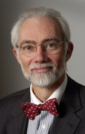

About the Cytometry for Life team
J. Paul Robinson is the SVM Professor of Cytomics in the School of Veterinary Medicine and a professor in the Weldon School of Biomedical Engineering at Purdue University. He received his Ph.D. in Immunopathology from the University of New South Wales, Sydney, Australia. He is the director of the Purdue University Cytometry Laboratories and Deputy Director for Cytomics and Imaging in the Bindley Bioscience Center.
He is the President of the International Society for Analytical Cytology and the Editor-in-Chief of Current Protocols in Cytometry. He is an active researcher with over 110 peer reviewed publications and 20 book chapters, has edited 7 books, and has given over 80 international lectures. He was elected to the College of Fellows of the American Institute for Medical and Biological Engineering in 2004, was the winner of the Pfizer Award for Innovative Research in 2004, and the Gamma Sigma Delta Award of Merit Research in 2002.
His research area has focused on reactive oxygen species, primarily in neutrophils, but more recently in HL-60 cells and other cell lines. His lab is currently studying the biochemical pathways of apoptosis as related to reactive oxygen species in mitochondria. His group has a strong interest in bioengineering, with hardware and software groups developing innovative technologies such as high-speed multispectral cytometry, optical tools for quantitative fluorescence measurement, and advanced classification approaches for clinical diagnostics.
- J. Paul Robinson, Ph.D.
- SVM Professor of Cytomics
- Professor of Basic Medical Sciences and Biomedical Engineering
- Director, Purdue University Cytometry Laboratories
- President, International Society for Analytical Cytology
- Purdue University
- 1203 West State Street
- West Lafayette, IN 47907
- Phone: (765) 494-0757
- E-mail: jpr@cytometryforlife.org
- www.cyto.purdue.edu
Gary Durack is the founder, President and Chief Technical Officer of iCyt Visionary Bioscience. He also currently holds an appointment with the University of Illinois at Urbana-Champaign as the Associate Director for Technology in the university’s Biotechnology Center. He is the author of numerous publications, has edited a book on advanced technologies, and is recognized internationally as an expert in the field of cytometry. He currently serves as a Technical Councilor for the International Society for Analytical Cytology. He received a BS in electrical engineering from Purdue University.
From 1979 through 1989 he worked for Coulter Electronics Inc. (now Beckman Coulter Inc.). During his tenure at the company, Mr. Durack served as a field applications specialist, director of their customer support operations, and manager of the research cytometry instrument development program.
In 1989 he moved to Purdue University to manage the Purdue University Cytometry Laboratories. In 1993 he was appointed Director of the University of Illinois Biotechnology Center Cytometry Facility. In his seven years as director he secured substantial grant and research contract support to modernize instrumentation and to develop new technologies at the UIUC Cytometry Facility. Among these developments was the first DSP-based flow cytometer capable of performing fluorescent lifetime measurement. During this period he collaborated with numerous UIUC faculty, taught a graduate course in flow cytometry, authored several papers, edited a book, and wrote several book chapters.
Since 2000 he has been engaged in numerous cytometry-related design and development projects for Fortune 500 companies, as well as products now marketed through iCyt Mission Technology. These products include the X-Cyt™ Software for cytometry information management, the Lyt 200™ solid state laser, and the Reflection® multi-channel, high-speed cell-sorting system.
- Gary Durack, MS
- Councilor, International Society for Analytical Cytology (ISAC)
- President and CTO, iCyt Visionary Bioscience
- iCyt Visionary Bioscience
- 2100 South Oak Street
- Champaign, IL 61820
- Phone: (217) 328-9396
- Fax: (217) 328-9692
- E-mail: gdurack@cytometryforlife.org
- www.i-cyt.com
Kathryn L. Beaver, RN, MS
Kathryn L. Beaver is Assistant Director of Bindley Bioscience Center in Discovery Park at Purdue University. With over 20 years of health care program management experience, her most recent management experiences include university-based biotechnology research, in-patient hospital, multi-specialty physician group practice, and social services venues in which Ms. Beaver functioned as a catalyst to implement positive change, ignite new operations, and resolve organizational challenges. She earned an Associate Degree in Nursing and a Master’s Degree in Health Promotion and Education from Purdue University, during which time she trained over 1,000 undergraduate and graduate American Red Cross emergency first aid students and instructors annually. In 1992, she was awarded an “Excellence in Teaching Award” from Purdue University and received a research award to study emergency providers’ response to AIDS/HIV. Publications include journal articles related to AIDS research and emergency care services, as well as teaching manuals for first-aid students and instructors. She has worked as a regional specialist for the national American Red Cross, functioned in various clinical nursing roles, and served as a community advisor to Eli Lilly and Company. Currently Ms. Beaver is working toward a Ph.D. in Health Promotion/Disease Prevention, with a research focus on personalized medicine, emerging technologies, and the improvement of health care.
- Kathryn L. Beaver, RN, MS
- Assistant Director of Bindley Bioscience Center
- Discovery Park
- Bindley Bioscience Center
- 1203 West State Street
- West Lafayette, IN 47907-2057
- Phone: (765) 496-1464
- Email: kbeaver@cytometryforlife.org
Hildred Sarah Rochon, MPH, MS
Hildred Sarah Rochon holds a Master of Public Health (MPH) degree in International Health Systems Management from Tulane’s School of Public Health and Tropical Medicine, a Masters degree in Biology from Indiana University-Purdue University, Indiananapolis, and a BS degree in Public Health, summa cum laude, from Dillard University in New Orleans. She was a 2004-2005 Fulbright Fellow in adolescent reproductive health research and a 2001 University of Michigan Population Fellows Program MSI Intern with John Snow, Inc., both in Madagascar. She also received a University of Michigan mini-grant in 2004 for service in Sénégal, supporting reproductive health/family planning education. She is proficient in French, having studied at the Université de Paris IV-Sorbonne. She held internships with the United States Environmental Protection Agency in Cincinnati, addressing water-borne pathogens, and with the Seattle Biomedical Research Institute for research on African sleeping sickness, specifically related to Trypanosoma brucei, presenting at IEEE IGARSS in Toronto, Canada. In fall, 2004, she was a research assistant for a cervical cancer project at Purdue University. In March 2006, she facilitated conference organizing and co-authored a presentation at the Global Summit on HIV/AIDS, Traditional Medicine & Indigenous Knowledge held in Accra, Ghana.
Hildred Sarah Rochon, MPH, MS Research Associate, Cytometry for Life Program- Purdue University
- 1203 West State Street West Lafayette, IN 47907
- Phone: (765) 494-0757
- E-mail: hrochon@cytometryforlife.org, hildredrochon04@fulbrightweb.org
Lova N. Rakotomalala
Lova N. Rakotomalala is a research assistant in the department of Basic Medical Sciences at Purdue University. Born in Nice, France, Lova grew up in Antananarivo, Madagascar. After finishing high school at lycée Stanislas (Paris, France), he attended Tulane University where he received a BS degree in Cell and Molecular Biology with a minor in Business Management. He also assisted in teaching sustainable development courses at the Payson Center for International Development, including translation of course materials for French-speaking African nations. He is currently completing a Ph.D. investigating the mechanism that leads to liver cancer caused by the hepatitis B virus, utilizing various flow cytometric and cell-imaging approaches.
Lova N. Rakotomalala Research Associate, Cytometry for Life Program- Purdue University
- 1203 West State Street West Lafayette, IN 47907
- Phone: (765) 494-0757
- E-mail: lrakotom@cytometryforlife.org